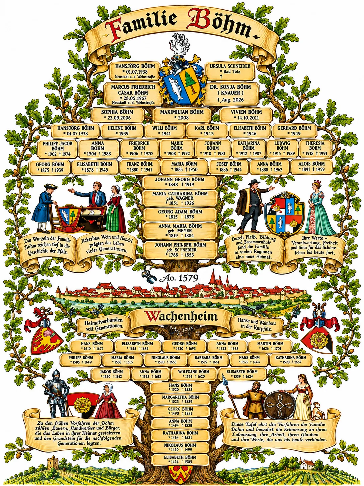

Selección clonal
De los viñedos viejos se eligen y multiplican las cepas más sanas y expresivas.
La familia Böhm
El árbol genealógico de la familia Böhm se remonta al Palatinado. En su centro está Wachenheim, en la Ruta del Vino alemana, pintada con el año 1579 y rodeada de los escudos de la familia y de sus antepasados.
El árbol forma parte de la «Crónica de la familia de Friedrich y Emilie Böhm y sus descendientes», editada por Jorge Böhm para la familia en 2013.
Leer la crónica familiar Comendador Hans Jörg Böhm Dorina Lindemann


Fundador de Plansel Group
Investigador de la vid, comerciante de vinos y fundador de Viveiros Plansel. Su selección clonal sigue marcando hoy gran parte de los viñedos de Portugal.
«Portugal necesita su propia investigación para no depender de variedades que no se adaptan a su suelo y su clima.»
Trayectoria
Comendador Jorge (Hans Jörg) Böhm, nacido en 1938 en Neustadt an der Weinstraße, procede de una familia alemana de comerciantes de vino. En 1961 su velero encalló cerca de Cascais y se enamoró de Portugal. Ya en 1969 la empresa familiar bajo su dirección era el mayor importador de vinos portugueses en Alemania.
Tras estudiar mejora de la vid en Geisenheim, fundó Viveiros Plansel en 1981 e inició la primera selección clonal sistemática de variedades portuguesas, con la Universidade de Évora y el actual INIAV. Más de 30 proyectos de investigación después, los clones Plansel están reconocidos en California, Nueva Zelanda y Australia, y gran parte de los viñedos de Portugal crece sobre vides Plansel, distribuidas por Viveiros Plansel y Vinverus.
En 2006 el Presidente de la República Portuguesa lo nombró Comendador de Mérito Agrícola.
Nace en Neustadt an der Weinstraße, en una familia alemana de comerciantes de vino.
El velero de Jorge Böhm naufraga en el puerto de Cascais. Se queda, conoce el país y ve el potencial de las variedades del Alentejo.
Bajo su dirección, la empresa familiar se convierte en el mayor importador de vinos portugueses en Alemania.
Compra sus primeras tierras cerca de Montemor-o-Novo. De ahí nace el vivero Viveiros Plansel.
Fundación de Viveiros Plansel e inicio de la primera selección clonal sistemática de variedades portuguesas.
Con Paulo Laureano nace el primer vino en la bodega experimental de la Universidad de Évora. Su nombre: Plansel, de «Plantas Seleccionadas».
Comendador de Mérito Agrícola, nombrado por el Presidente de la República
Se publica O Grande Livro das Castas, galardonado en 2010 con el premio OIV.
Mejor técnico vitícola, Revista de Vinhos
Placa de honor de la Universidade de Évora
Medalla de honor de la Academia das Ciências de Lisboa
Nuevo libro: Livro Branco das Castas Vitícolas.
Investigación
De los viñedos viejos se eligen y multiplican las cepas más sanas y expresivas.
Vides que necesitan menos fitosanitarios. Böhm lo considera la tarea más importante del sector.
Material vegetal para veranos más calurosos y menos agua, probado en el Alentejo.
Variedades portuguesas casi olvidadas se redescubren y se prueban en vino.

La siguiente generación
Dorina estudió Enología en la Universidad de Geisenheim. En 1997 fundó la bodega de la Quinta da Plansel en las tierras de su padre en Montemor-o-Novo; en 1999 nació su primer vino premium con su nombre, 2.000 botellas. Hoy dirige la Quinta como CEO, junto a sus hijas Júlia y Luísa.
Enseña en la Universidad de Geisenheim sobre variedades, clima y regiones de Portugal y es catadora oficial de Mundus Vini. Sus vinos han sido premiados en Mundus Vini, Decanter y el IWC.
Libros


Por ahora, Wikipedia solo tiene artículos en portugués y alemán. Esta página resume su vida en siete idiomas.
Contacto
Para preguntas sobre variedades, clones, investigación y sus libros.